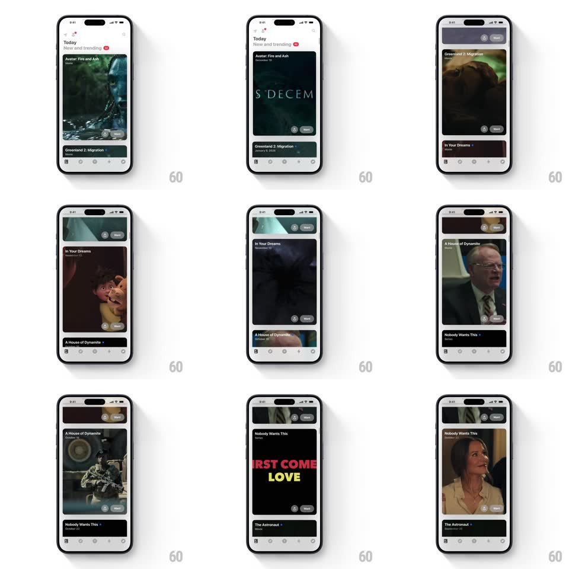

Media
Frame-by-frame

Rebuild this interaction 1:1: Must's feed snap - the "New and trending" feed of full-width video preview cards (Avatar: Fire and Ash, Greenland 2: Migration, In Your Dreams, A House of Dynamite, Nobody Wants This, The Astronaut) scrolls with a magnetic snap that locks one card to center while the next peeks below.

Rebuild this interaction 1:1: Must's feed snap - the "New and trending" feed of full-width video preview cards (Avatar: Fire and Ash, Greenland 2: Migration, In Your Dreams, A House of Dynamite, Nobody Wants This, The Astronaut) scrolls with a magnetic snap that locks one card to center while the next peeks below. ## Integration Integration: stack-agnostic spec - springs given as stiffness/damping, timed motions as duration + curve; map every value to your framework and animation library of choice. ## Scene White feed: "Today" header with "New and trending" and a LIVE dot, then a vertical stream of large rounded preview cards - each a movie still with the title, year, genre tag, and small action buttons (rating, share) pinned at the card's lower edge. Bottom tab bar below. ## Motion spec Pattern: scroll-snap card feed, gesture-driven. - Scroll: cards move 1:1 with the drag; the topmost card scales down slightly (1 -> 0.96) as it exits, the incoming one scales up (0.96 -> 1). - Snap: on release, the nearest card locks to its resting offset (spring ~340/26, 300ms) - one card always sits fully revealed with the next peeking 15% at the bottom. - Buttons: the per-card action buttons fade in only when the card is at rest (200ms) and hide mid-scroll. - Overscroll: top and bottom rubber-band (translate 0.4x) and spring back. ## Calibration - Snapping is per-card: the feed never rests between cards. - Peek height stays constant so the next title is always teased. ## Reduced motion Cards settle with a 250ms ease; no scale change. ## Don't miss - Card art is edge-to-edge with the title overlaid top-left, not a separate thumbnail. - The LIVE indicator pulses (opacity 0.5 -> 1, 1s) on the header.